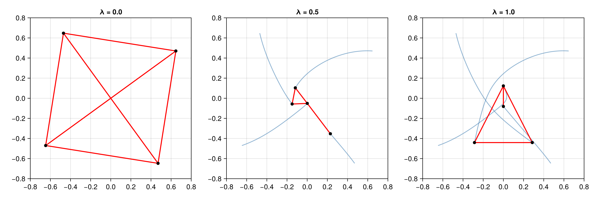

Tutorial
In this tutorial, we demonstrate the main features of HomotopyResurgence.jl with four examples: the Pearcey integral, the swallowtail catastrophe, whose Stokes constants change in higher-order Stokes phenomena along the homotopy, the parabolic umbilic in two variables, and the Hankel function, a rational exponent that we treat through a polynomial lift.
The exponent enters as a Julia function of a vector q of complex variables. The package differentiates it with ForwardDiff, so any polynomial written with +, * and ^ works.
The Pearcey integral
We consider the Pearcey integral
\[\Psi(k) = \sqrt{\frac{k}{2\pi i}} \int_{\mathbb{R}} e^{i k f(q)}\, \mathrm{d}q, \qquad f(q) = q^4 + \frac{q^2}{2} + q.\]
The derivative $f'(q) = 4q^3 + q + 1$ has degree $3$, so the reference integral needs the index $m = 4$, with the $m - 1 = 3$ saddle points of $g(x) = x^4/4 - x$.
using HomotopyResurgence, CairoMakie
f(q) = q[1]^4 + q[1]^2 / 2 + q[1]
r = stokesHomotopy(f, [4]; N = 4000)stokesHomotopy returns a named tuple. The saddle points of $f$ that the homotopy reaches, their Borel singularities $t_j = -i f(q_j)$ and the Stokes constants are
first.(r.x)3-element Vector{ComplexF64}:
0.25 + 0.6614378277661477im
-0.5 + 2.711709361697228e-31im
0.25 - 0.6614378277661476imr.Σ3-element Vector{ComplexF64}:
0.5787580992953791 - 0.09375im
0.0 + 0.3125im
-0.5787580992953791 - 0.09375imr.K3×3 Matrix{Int64}:
0 1 1
-1 0 1
-1 -1 0K[j, l] is the Stokes constant $K_{jl}$ with which the series of saddle point $j$ sees the Borel singularity of saddle point $l$, in the convention of Berry & Howls (1991). Every pair of saddle points of the Pearcey integral is adjacent. The normalisations $T_0^{(j)} = 1/\sqrt{f''(q_j)}$ of the series, for which these constants hold, are
r.T03-element Vector{ComplexF64}:
0.17886061123765284 - 0.39622104721014856im
0.5 - 0.0im
0.17886061123765293 + 0.3962210472101486imThe homotopy started from the reference integral, with the Stokes constants of referenceStokes1D:
r.K03×3 Matrix{Int64}:
0 1 1
-1 0 1
-1 -1 0The tracks of the Borel singularities, with the adjacency graph at the end of the homotopy:
fig, ax = plotHomotopy(r.pathsBorel, r.K, 1.6)
fig
The swallowtail catastrophe: higher-order Stokes phenomena
For the swallowtail catastrophe,
\[f(t) = t^5 + z t^3 + y t^2 + x t, \qquad x = y = 0.7, \quad z = -1,\]
the adjacency graph changes along the homotopy. We use the phase $\gamma = e^{i\pi/5}$ of the paper:
using HomotopyResurgence, CairoMakie
f(q) = q[1]^5 - q[1]^3 + 0.7q[1]^2 + 0.7q[1]
r = stokesHomotopy(f, [5]; N = 4000, γ = cis(π / 5))
r.K4×4 Matrix{Int64}:
0 1 0 1
-1 0 -1 1
0 1 0 0
-1 -1 0 0The higher-order Stokes phenomena of the homotopy are stored in r.events. Every event records the grid parameter τ (with $\lambda = (\tau - 1)/N$), the grid index i and the triple: the Borel singularity of k crosses the segment between those of j and l.
r.events3-element Vector{@NamedTuple{τ::Float64, i::Int64, j::Int64, k::Int64, l::Int64}}:
(τ = 1546.9516145324849, i = 1546, j = 1, k = 2, l = 3)
(τ = 1998.331376712629, i = 1998, j = 3, k = 2, l = 4)
(τ = 3273.904674332535, i = 3273, j = 1, k = 3, l = 2)higherOrderStokes replays these events. With the keyword upto, it returns the Stokes constants at any point of the homotopy, here before and after the first event (for the tracks of the reference integral, before the conversion to the normalisation of $f$):
τ = r.events[1].τ
higherOrderStokes(r.K0, r.pathsBorel; upto = floor(Int, τ), events = r.events)4×4 Matrix{Int64}:
0 1 1 1
-1 0 1 1
-1 -1 0 1
-1 -1 -1 0higherOrderStokes(r.K0, r.pathsBorel; upto = ceil(Int, τ) + 1, events = r.events)4×4 Matrix{Int64}:
0 1 0 1
-1 0 1 1
0 -1 0 1
-1 -1 -1 0The adjacency graph at the start, halfway and at the end of the homotopy:
N = length(r.pathsBorel[1]) - 1
fig = Figure(size = (1200, 400))
for (n, i) in enumerate((1, N ÷ 2 + 1, N + 1))
K = higherOrderStokes(r.K0, r.pathsBorel; upto = i, events = r.events)
ax = Axis(fig[1, n], title = "λ = $((i - 1) / N)", aspect = 1, limits = (-0.8, 0.8, -0.8, 0.8))
pts = [p[i] for p in r.pathsBorel]
for p in r.pathsBorel
lines!(ax, real.(p[1:i]), imag.(p[1:i]), color = (:steelblue, 0.6))
end
for a in eachindex(pts), b in a+1:length(pts)
K[a, b] == 0 && continue
lines!(ax, real.(pts[[a, b]]), imag.(pts[[a, b]]), color = :red, linewidth = 2abs(K[a, b]))
end
scatter!(ax, real.(pts), imag.(pts), color = :black)
end
fig
The parabolic umbilic: two variables
The parabolic umbilic has the exponent
\[f(u, v) = u^2 v + v^4 + x u^2 + y v^2 + z u + w v, \qquad x = 0.1, \quad y = -0.1, \quad z = 1, \quad w = 0.\]
The partial derivatives have the degrees $2$ and $3$, so the reference integral has the indices $(3, 4)$ and $2 \cdot 3 = 6$ saddle points:
using HomotopyResurgence
f(q) = q[1]^2 * q[2] + q[2]^4 + 0.1q[1]^2 - 0.1q[2]^2 + q[1]
r = stokesHomotopy(f, [3, 4]; N = 4000)
length(r.pathsBorel), r.finite(6, [1, 2, 3, 5, 6])Five tracks reach the saddle points of $f$, and the sixth flies off to infinity. The Stokes constants of the five saddle points:
r.K5×5 Matrix{Int64}:
0 1 1 0 0
-1 0 0 0 -1
-1 0 0 -1 0
0 0 1 0 1
0 1 0 -1 0The Hankel function: a rational exponent
The Hankel function of order one,
\[\Psi(k) = \int_0^\infty e^{i k (x + 1/x)}\, \mathrm{d}x = -\pi H_1^{(1)}(2k),\]
has a rational exponent with the saddle points $x = \pm 1$. To apply the homotopy, lift it to a polynomial exponent in three variables: $x_2$ replaces $1/x_1$, and $x_3$ enforces $x_2 x_1 = 1$,
\[P_{\mathrm{ext}}(x_1, x_2, x_3) = (1 + x_1^2)\, x_2 + x_3\,(x_2 x_1 - 1).\]
Every partial derivative has degree $2$, so the reference integral has the indices $(3, 3, 3)$ and $8$ saddle points:
using HomotopyResurgence
P(q) = (1 + q[1]^2) * q[2] + q[3] * (q[2] * q[1] - 1)
r = stokesHomotopy(P, [3, 3, 3]; N = 4000)
length(r.pathsBorel), r.finite(8, [2, 7])Six saddle points fly off to infinity. The two that remain reach $x_1 = \pm 1$, with the Borel singularities $t = \pm 2i$:
r.Σ2-element Vector{ComplexF64}:
0.0 + 2.0im
0.0 - 2.0imr.K2×2 Matrix{Int64}:
0 2
-2 0The Stokes constant has magnitude $2$, beyond the bound $|K_{jl}| \leq 1$ of polynomial exponents in one variable. The escaping saddle points build it: on their way to infinity, they cross the segment between the two survivors, and every crossing adds $\pm 1$.
The normalisation of the series
The Stokes constants depend on the branch of $\sqrt{\det \mathcal{H}f}$ in the normalisation of every series. seriesNormalisation fixes it: by default (:morse), the principal branch for a complex saddle point and stationary phase, $\rho = i^{\nu}\sqrt{|\det \mathcal{H}f|}$ with the Morse index $\nu$, for a real one, as in transseries of IntegralResurgence.jl. The two conventions differ at a real maximum in two variables, with $\mathcal{H}f = -I$ and $\nu = 2$: stationary phase gives $\rho = i^2 = -1$, the principal branch $\rho = +1$.
using HomotopyResurgence
H = ComplexF64[-1 0; 0 -1]
x = ComplexF64[0, 0]
seriesNormalisation(H, x), seriesNormalisation(H, x; normalisation = :principal)(-1.0 + 0.0im, 1.0 - 0.0im)Pass normalisation = :principal to stokesHomotopy to use the principal branch for every saddle point. Flipping the branch of the series of saddle point $j$ flips the signs of row and column $j$ of K.